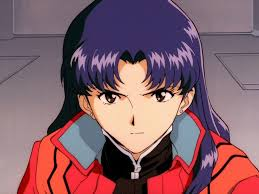

|  |
29 лет. Оперативная командующая Nerv. Капитан, позже — майор. Опекун Синдзи и Аски.
Мисато — полевой командир пилотов Евангелионов, в её обязанности входит оперативное командование и разработка стратегии сражений, а также некоторые бюрократические моменты.
Она единственный выживший человек из научной экспедиции под руководством её отца, действия которой спровоцировали Второй Удар. После Второго Удара находилась в тяжелом шоке, не разговаривала в течение двух лет.
Впоследствии служба в Nerv превратилась для неё в личную месть. В отличие от остального командного состава Nerv сильно переживает за пилотов. Мисато взяла Синдзи и Аску жить к себе в квартиру, посчитав, что это лучше, чем если бы они жили в одиночестве.
С ними также живёт старый лабораторный пингвин Пен-Пен. Хотя Мисато профессиональна и ответственна на службе, в быту она ведёт себя как стереотипный холостяк — не занимается уборкой, не умеет готовить (в состоянии испортить даже полуфабрикаты), пьёт пиво по утрам.
Она училась в одном колледже вместе с Рицуко Акаги и Рёдзи Кадзи. Мисато и Рёдзи были любовниками в колледже и постепенно возродили свой роман во время сериала.
Дружит с Рицуко, но чем больше Мисато узнаёт про секреты Nerv, тем меньше ей доверяет. Была куратором Аски до 2010 года, перед Рёдзи.
Приметы: Длинные иссиня-чёрные волосы, чёлка короткая. Глаза карие. Почти не пользуется косметикой. Шрам-рубец под грудью. Носит амулет в виде массивного греческого креста. |